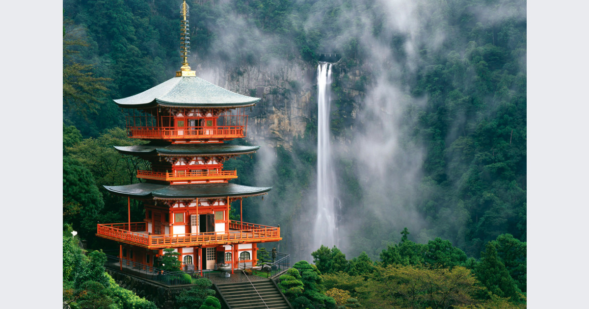
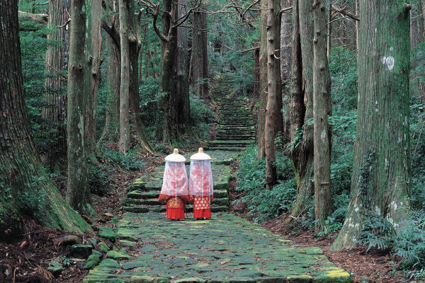

高野山
高野山は和歌山県に位置し、日本の仏教の聖地として有名です。弘法大師空海によって816年に開山され、真言宗の総本山として知られています。山頂には100以上の寺院があり、その中でも金剛峯寺は中心的な存在です。奥之院には空海の御廟があり、多くの参拝者が訪れます。高野山は世界遺産にも登録されており、美しい自然と厳かな雰囲気の中で精神的な安らぎを求める人々にとって重要な場所です。

熊野古道

熊野古道は日本の和歌山県にある歴史的な参詣道で、紀伊山地の霊場と参詣道の一部として世界遺産に登録されています。古道は紀伊半島の熊野三山（熊野本宮大社、熊野速玉大社、熊野那智大社）への参詣道で、古代から多くの巡礼者が訪れてきました。道中には美しい自然景観や歴史的な寺社、石畳の道が広がり、心身を清めるための修行の場としても知られています。熊野古道は、古代日本の文化と自然の調和を感じることができる特別な場所です。